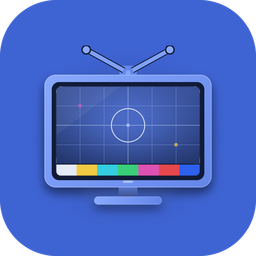

Публично доступные телеканалы RuTube на Android TV: прямой эфир и телепрограмма из RuTube API. Бесплатно, с открытым кодом, управление — только пультом.
Скачать APKМОЁ ТВ — медиаплеер для Android TV и ТВ-приставок (производный от GPLv3-проекта OwnTV). Приложение не содержит собственного контента: единственный источник — встроенный каталог прямого эфира RuTube, а расписание берётся из того же RuTube API и сопоставляется с каналами по идентификаторам.
1. Скачайте APK на приставку или телефон-флешку.
2. Установите его: adb install MoeTV_1.2_universal.apk — или откройте файл на телевизоре
и разрешите установку из неизвестных источников.
Обновления: в приложении «Настройки → О приложении → Проверить обновления» — проверка идёт по релизам на этой странице.